a catalog of recent delights
- a plant by the river in rochester, new york
- from the williamsburg bridge at sunrise
- maria hernandez park looking autumnal
- a bowl of berries my mom left for me
- a tree in the light on my walk to a coffeeshop
- homemade borsch
- silly homemade birthday cake for a friend
- light through the kitchen window
- photo of a corgi left on a secondhand digital camera
- ivy in east williamsburg
- a friend's abundant garden
- sunrise on the bridge again
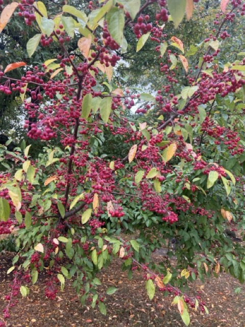
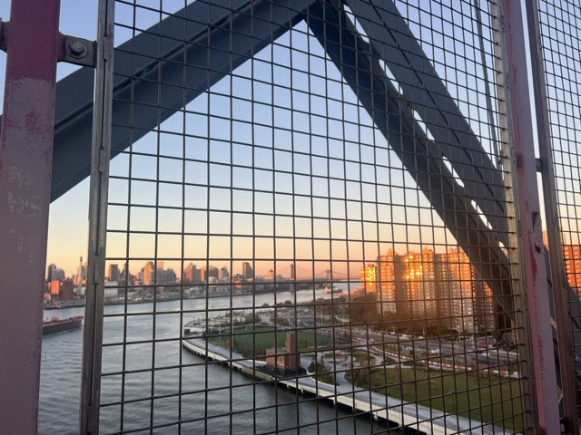
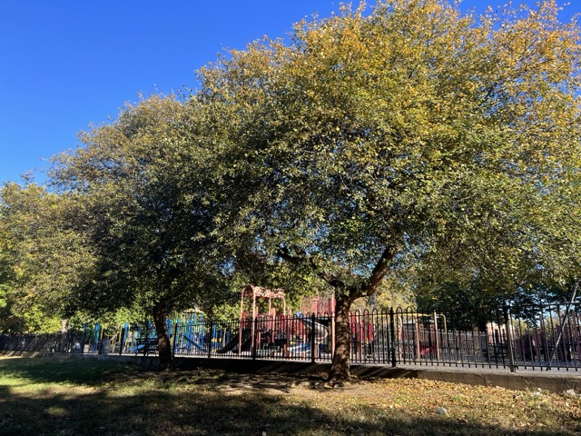
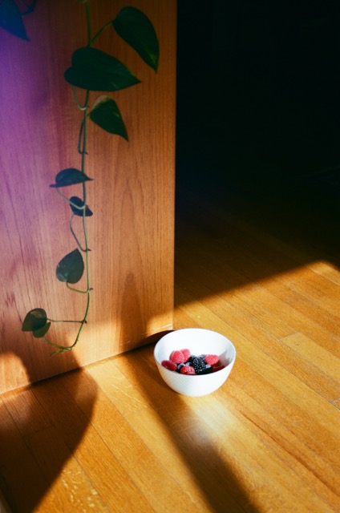
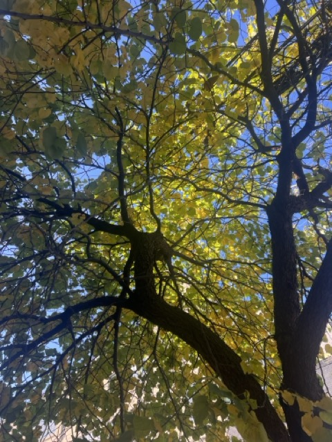
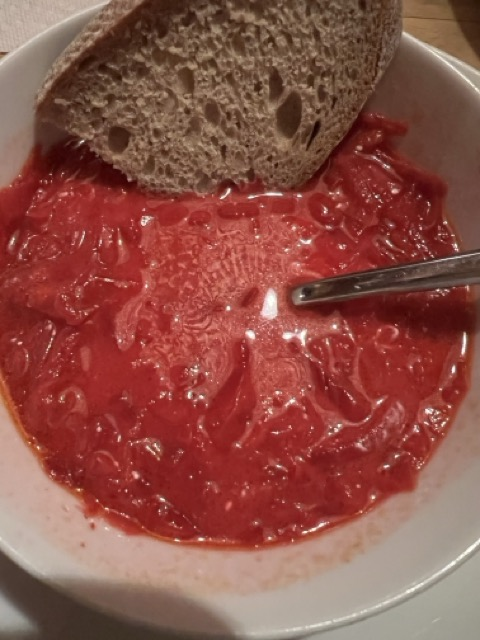
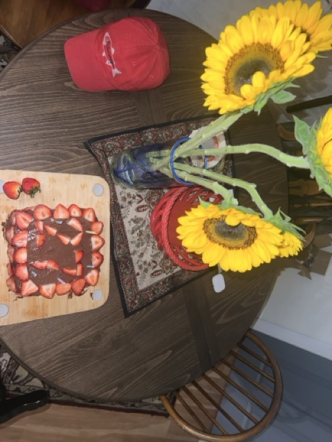
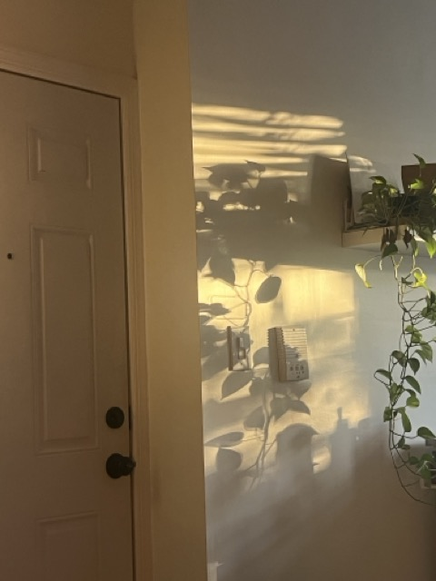
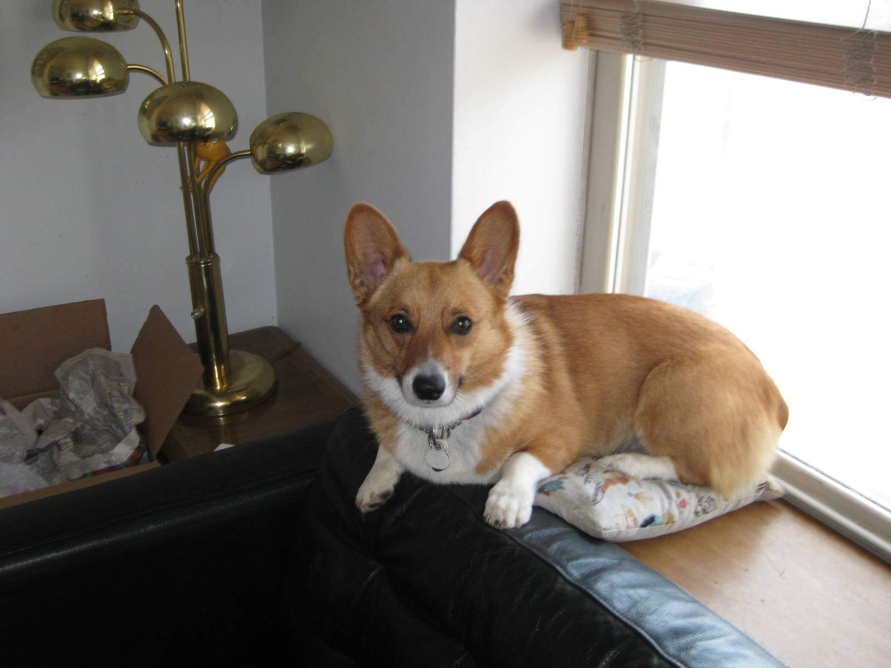
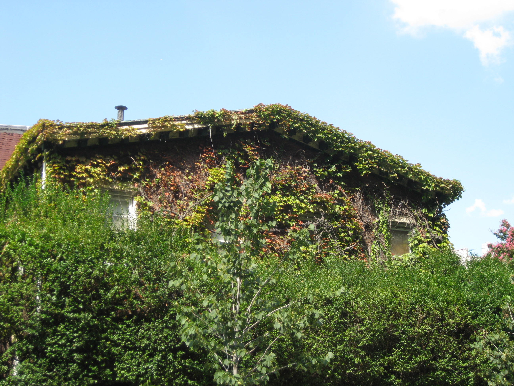
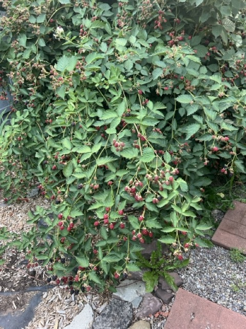
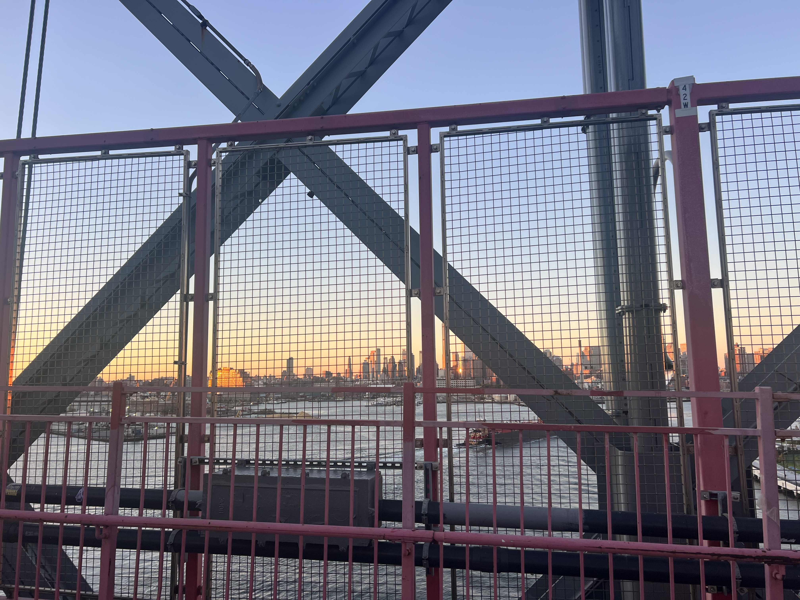